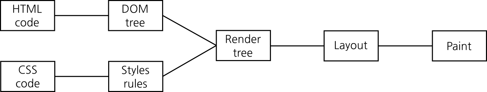

Optimising reflows and repaints
Thomas Gohard
GitHub: @thomasgohard
Twitter: @thomasgohard
Why you should care
7.2s
960ms
Rendering a Web page
The layout (a.k.a. reflow) operation
- Calculate position and dimensions of elements
- Flow-based layout
- Triggered on change of position or dimensions
- Triggers a repaint
The paint operation
- Calculate and set colour of each pixel
- Triggered whenever a pixel's colour must be changed
Browsers do some optimisation
- Limit the scope of reflows and repaints.
- Buffer and batch reflows and repaints.
What triggers a reflow or a repaint
User actions
- Scroll
- Resize browser window
- Change font size
- Zoom
- Type text in form field
DOM or style manipulations
- Insert/remove DOM element
- Change
classorstyleattributes - Computing styles (e.g., getComputedStyle)
Changing styles — the bad way
elm.style.border = "1px solid #000"; // reflow + repaint
elm.style.backgroundColor = "#fff"; // repaint
elm.style.color = "#000"; // repaint
elm.style.fontWeight = "bold"; // reflow + repaint
2 reflows, 4 repaints
Changing styles — the good way
elm.style.cssText += " border: 1px solid #000; background-color: #fff; \
color: #000; font-weight: bold;"; // reflow + repaint
or
elm.className += " someclassname"; // reflow + repaint
1 reflow, 1 repaint
Computing and setting styles — the bad way
for (var i = 0; i < 100; ++i) {
// reflow + repaint (offsetLeft), reflow + repaint (style.left)
elm.style.left = elm.offsetLeft + 10 + "px";
}
200 reflows, 200 repaints
Computing and setting styles — the good way
elmLeft = elm.offsetLeft; // reflow + repaint
for (var i = 0; i < 100; ++i) {
elmLeft += 10;
elm.style.left = elmLeft + "px"; // reflow + repaint
}
101 reflows, 101 repaints
Changing styles on multiple elements — the bad way
for (var i = 0; i < 100; ++i) {
elm = parentElm.children[i];
// reflow + repaint (offsetLeft), reflow + repaint (style.left)
elm.style.left = elm.offsetLeft + 10 + "px";
}
200 reflows, 200 repaints
Changing styles on multiple elements — the good way
parentElm.style.display = "none"; // reflow + repaint
for (var i = 0; i < 100; ++i) {
elm = parentElm.children[i];
elm.style.left = elm.offsetLeft + 10 + "px";
}
parentElm.style.display = "block"; // reflow + repaint
2 reflows, 2 repaints
Changing styles on multiple elements — another good way
var parentElmParent = parentElm.parent;
var parentElmSibling = parentElm.nextSibling;
var parentElm = parentElmParent.removeChild(parentElm); // reflow + repaint
for (var i = 0; i < 100; ++i) {
elm = parentClone.children[i];
elm.style.left = elm.offsetLeft + 10 + "px";
}
// reflow + repaint
parentElmParent.insertBefore(parentElm, parentElmSibling); 2 reflows, 2 repaints
Changing styles on multiple elements — yet another good way
var parentClone = clone(parentElm); // assume clone() creates a deep clone
for (var i = 0; i < 100; ++i) {
elm = parentClone.children[i];
elm.style.left = elm.offsetLeft + 10 + "px";
}
parentElm = parentClone; // reflow + repaint
1 reflow, 1 repaint
Thank you!
Please share and improve this presentation.
Presentation: https://thomasgohard.github.io/optimising-reflows-and-repaints
Source: https://github.com/thomasgohard/optimising-reflows-and-repaints

This work is licensed under a Creative Commons Attribution-ShareAlike 4.0 International License